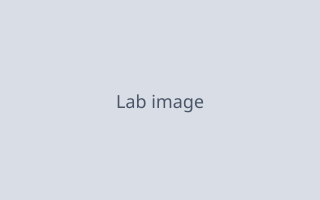

OpenUI A5 baseline (static fixture)
Upstream visual reference constructed from old/ class names and
token values. Same family ids as the Sanctum port lab for paired screenshots.
Stack
Stack A
Stack B
Stack C
Card
Card title
Card subtitle
Card body line for visual parity.
Sources
- Example source · example.com
Content primitives
Inline header
Secondary line
TextContent sunk block — foundation paragraph.
TextCallout
Highlight callout for operators.
Callout
Status notice for operators.
Alpha
Beta
Gamma
AgentLane
AdaInfra
OttoBuild
12
Open tasks
+33%
Lists / Code / Images
1
First item
Detail A
2
Second item
Detail B
3
Third item
const parity = true;
console.log(parity);
Tabs
Line panel body for visual parity.
Accordion
Accordion panel one content.
Accordion panel two content.
Section
Overview body.
Details body.
Steps
-
1
Gather
Collect inputs
-
2
Review
Check parity
-
3
Ship
Close A5
Carousel
Slide 1
Alpha detail
Slide 2
Beta detail
Slide 3
Gamma detail